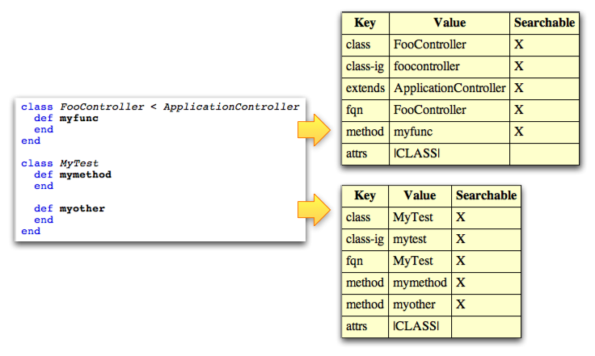

If you register an indexer with GSF, it will be called at the right times to extract relevant information from a ParseResult, and store it somewhere in persistent store. You can later quickly search this index. This lets you for example implement cross-file behavior such that a user can search the whole project for functions or classes (via the Open Type dialog in NetBeans), or cross-file go to declaration, code completion referencing symbols in other files, etc. And this can be achieved without having to go and parse other files on the fly when you're trying to collect project information. The index is always kept in sync by GSF. At startup, GSF looks at all the files in your project (as determined by the relevant source directories, see the section on Classpath) and checks whether the timestamp is more recent than the previous timestamp that is recorded in the index. Files that have changed (or have never been indexed) will be indexed, in a background thread, at startup. Similarly, as soon as a file deleted, or edited and then closed, the index will be updated. GSF also tracks whether a file has been edited, such that if you attempt to access its index when the index is considered dirty, the indexer will be immediately called such that all clients of the index can assume the index is always up to date.
Indexing is simple. It basically lets you, for any particular source file, store a series of "Documents", where each document contains a multimap. Each multimap consists of keys, and one or more values each key. Furthermore, keys can be designated as "searchable" or not. This just controls whether you can search the index by the given key. (Keys that are searchable require a bit more maintenance on the GSF side, which is why you avoid it for keys you never plan on searching by).
It is up to you to decide what information to store in the index, how to divide it into documents, how to "encode" it into Strings (all [key,value] pairs are of type [String,String], and so on. Typically, you will make this decision based on how you can later retrieve the information. So, you need to think up front about what you will need, and organize the information based on that. When you search, you can search for a given key. This will return you a set of all the documents where the search occurs. This lets you find other values associated with the [key,value] pair in the same document.
Here's how the information is currently stored for Ruby.
In Ruby, a file can contain many classes. I decided to put each
class in its own search document. This means that if I for example
search for methods that start with "foo", I can look in the same
document for the "class" attribute and I will have information
about the class containing the method. Here's an example of
a Ruby file and the search documents created by the Ruby language
plugin's indexer:

As you can see, we get two documents, one for each class in the file.
In the second class, we have two methods. Each method
is recorded with a "method" key. Later, if I call
searchDoc.getValue("method") I will get out two strings,
{"mymethod","myother"}. If I now want to know what
class these methods are coming from, I can call
searchDoc.getValue("class") - or to get the fully qualified
name (fqn), searchDoc.getValue("fqn"). I can also look
up attributes for this class with searchDoc.getValue("attrs")
which for example lets me see if this is a class or a module. I store
a number of attributes - whether a class is documented, or if it
is explicitly to be ignored, and so on. These are used by the code
completion and go to declaration feature implementations to for example
pick the best candidate among multiple possibilities.
There's a more complete list of the data stored in the Ruby index
later in this document.
To index your code, implement the
Indexer interface.
First, you must implement the isIndexable method:
boolean isIndexable(@NonNull ParserFile file);
This should just be a quick check to see if the given file should
be indexed by this indexer. Typically, you'll just look at the file
name and make a decision.
.js files, as well as .html, .jsp
and .erb, since these embedded file types can contain
JavaScript functions we want in the index.
In some cases however, the logic can be slightly more complicated.
In the case of JavaScript again, it's pretty common to have "minimized"
versions of a file, where symbols have been replaced with single letter
names, whitespace removed etc. to make the code as small and fast as
possible. We typically don't want to index these versions, so the
JavaScript indexer checks the file name and looks for name pattern
overlaps. If it for example finds foo-debug.js, foo-min.js
and foo.js, it will return false from isIndexable()
for both foo-debug.js and foo-min.js, and true
only for foo.js.
IMPORTANT: You may be tempted to base your decision on the mimetype of
a file, but be careful calling file.getFileObject().getMimeType().
First, file.getFileObject() can be a performance issue.
During startup, your indexer will be asked by the system for all the
source files in the project if they are indexable. Each getFileObject
can end up doing a lot of work.
A bigger problem is that when source files are deleted, the index needs to
be cleaned up. The IDE will ask all the indexers if they care about this file,
and if they do, the index entries will be cleared for this file.
(TODO: Perhaps I should just unconditionally try to delete the file in all
indices?)
In any case, when a file is deleted, its FileObject no longer
exists, and calling file.getFileObject() will return null.
You can end up getting an NPE in these cases if you're not careful.
The second method you have to implement in your indexer is
List<IndexDocument> index(ParserResult result, IndexDocumentFactory factory)
Here, all you have to do is look up your own AST from your ParserResult.
Then, look through your AST, pick out the information you want to store, and store
it in the index. You do that by creating one or more documents (by calling
the IndexDocumentFactory which is passed to you above.
The IndexDocumentFactory lets you create an IndexDocument.
And each IndexDocument object has a single method:
void addPair(String key, String value, boolean searchable);
So, all you have to do here is call addPair repeatedly, with key,value pairs.
You also get to decide if your key is searchable. You must be consistent
in how you call this method with respect to the searchable parameter
for a given key in a given document.
You can search your index. For the various feature implementations (code completion,
go to declaration, and so on), you are passed a
CompilationInfo instance.
The CompilationInfo holds a lot of vital state: your parser result,
the file object and document corresponding to the current file, and so on.
It also gives you access to the
Index object.
The Index class has one method:
SearchContext class which holds some of the
search parameters, and the search method will change into a simple
search(SearchContext) method. I also plan to remove the result list
input parameter and just return it (created by the index) instead.
public abstract void search(
@NonNull final String key,
@NonNull final String value,
@NonNull final NameKind kind,
@NonNull final Set<SearchScope> scope,
@NonNull Set<SearchResult> result,
@NonNull final Set<String> includeKeys);
The way this works is that you create your own empty set of SearchResults,
and then you call the search method on the index with a key, a value (which
for example can be a prefix), and so on. This will fill your SearchResult
set with matches.
You can now iterate over the matching SearchResults (which will correspond to
IndexDocuments your indexer have created earlier), and for each,
call one of the getValue methods:
@NonNull String getValue(@NonNull String key);
@NonNull String[] getValues(@NonNull String key);
If you know that you're storing just one value for a given in the index
(such as the class or fqn keys in the Ruby index),
you can call the getValue method to get it directly. If you're
storing many values (such as the method key in the Ruby index),
call getValues to get an array of all the results.
In the search section above I glossed over some of the other parameters
in the search method. In particular, the scope
parameter, which lets you control whether to search just the current
project, or just the libraries, or both. But how does GSF know what source
files are relevant in the project? And what about the libraries?
This is controlled by a different API in GSF, which you use to integrate into different project types and tell GSF which directories are relevant for this project, as well as register libraries. This is described in more detail in the Classpath document.
I recommend that you build an abstraction on top of the index. Your various feature implementations shouldn't go into the index and look for specific keys and so forth. That will make changing the index (which I will discuss in the next section) very difficult. Instead, you should create a class which wraps the index with logical methods. For example, in Ruby, I have a RubyIndex class which has dedicated methods like
getClasses()getMethods()getSubclassesOf()getRequires()getTransitiveRequires()getSuperClass()getOverridingMethod()getInheritedMethods()During development, including after your first release, you'll probably find that you want to make changes to the index, either because of performance reasons, or because you want to store more information to support new features. However, if you just make the change in your indexer and index query code, you might have a really hard time dealing with the fact that your users can have existing indices out there with the old data format.
Dealing with this is easy. The Indexer class has these two
methods:
@NonNull String getIndexerName();
@NonNull String getIndexVersion();
Any time you make an incompatible change to the way you are storing data
in the index, just change the value of your getIndexVersion()
method. This will force reindexing of all the code whenever your users
run with your new version of the indexer.
The way this works on the implementation side is that each index database
is isolated, and in particular, they are stored in the user directory,
under var/cache/gsf-index/your-index-name/your-index-version.
For example, the Ruby indexer names its indexer "ruby", and the JavaScript
indexer names its indexer "javascript". This ensures that these two systems
don't interfere which each others databases. The index version is just a string,
and you can put anything you want here (as long as it's a string that is
filesystem safe, meaning it can be written on all file systems where NetBeans
runs). A good convention is to just use a number - e.g. "42" or "6.5.2", etc.
Unit testing your indexer is trivial. Create a unit test class for your
indexer, and make sure it extends GsfTestBase. Then, just
create new tests with the following single line call:
public class RubyIndexerTest extends RubyTestBase {
public void testIndexData() throws Exception {
checkIndexer("testfiles/date.rb");
}
public void testRails1() throws Exception {
checkIndexer("testfiles/action_controller.rb");
}
...etc
}
All you have to do is put the test files you want into test/unit/data,
refer to them from the checkIndexer call, and the GSF test infrastructure
will do the rest: it will load the file, parse it using your parser,
call your indexer, pretty print it, see if a golden file (named the same as
the input file name, plus the extra extension .indexed) exists,
and if not create it, or otherwise diff the computed results with the golden
file. The test fails if the diffs aren't identical.
See the Unit Testing document for more information.
Sometimes a feature fails -- for example, code completion doesn't return the results you expect. One way to debug this is to use the GSF diagnostics tools. The Lucene Index Browser is described in the GSF Diagnostics Tools document.
The following table shows the data currently stored in the Ruby index, which will hopefully give some ideas for how a complete indexer/query system can work:
| Key | Value |
|---|---|
| fqn | Fully qualified name of a class or module, such as "Test::Unit" for the Unit class. |
| class | The "basename" of a class or module, such as "Unit" for the Test::Unit class. |
| class-ig | A lowercased version of the class name. Used for case insensitive queries. (This shouldn't be necessary). |
| extends | The fully qualified name of a superclass, if any. Used to compute inherited methods by iterating through class documents. |
| in | The name of the module this class is contained in. |
| require | The string required to include this class from other files, e.g. io/nonblock for the nonblock.rb file. Used for require-completion. |
| requires | A list of all the files this file requires. Used to compute file inclusion transitively. |
| includes | A list of modules included (not the same as requires) by this class or module. |
| extendWith | Used to simulate the way classes can dynamically be extended with a given module in Ruby. |
| method | A method in the class. This isn't just a method name; it's a pretty complicated encoding of the method name, its parameter list, its (optional) return type, its (optional) parameter hints or types, as well as a set of attributes for the method (is documented, is ignored, etc.) |
| field | A field in the class |
| attribute | An attribute in the class. |
| constant | A constant in the class |
| attrs | A set of attributes for the class, written as a hex value string |
| dbtable | For active record database table completion, the table name this migration refers to |
| dbversion | The version number of this migration (used to apply the migrations in the correct order) |
| dbcolumn | A column name to be added, removed or renamed (indicated with + or - after the name) |